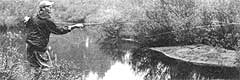
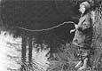
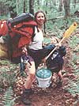
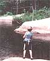
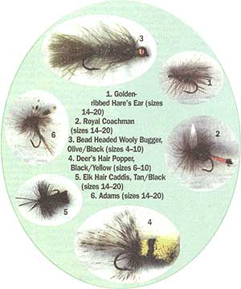

BACKCOUNTRY SKILLS
A FOUR-DAY CRASH COURSE IN THE ART OF fly-fishing, canoe navigation,
and the sheer joy of being soaked to the skin.
Robin and I demonstrate a little technique.
You don't often get to swap anything even up with a physician. When health and life are in the balance, it's hard to imagine what might approach a fair trade. So having the chance to exchange a few hours of basic fly-fishing instruction for some river-canoeing lessons with my physician-friend Peter was, in my mind, a rare occasion where nondoctor and doctor might actually walk away square. Not that Peter is your average physician or that I am your average fly rodder. Peter and his wife Anita, and Ditte (11), Patrick (7), and Robin (5), their three children, live deep in the High Peaks region of the Adirondack Mountains in a house that they built themselves. And my wife Kit and I live in New Jersey, in the shadow of the big city.
We sized it up like this: Peter would figure out the route to and down the river. During the trip he would give us an on-the-water river-canoeing tutorial. Peter and his family are experienced river trippers and have covered all kinds of water from Texas to British Columbia. Kit and I had not canoed much in moving water. We could move our boat well enough for most average adventures, but we had never taken it on a river trip or portaged over any significant distance. The East Branch of the Oswegatchie, from its headwaters down to the area known as the Inlet, would be just the ticket for our exercise-slow but curvy, with maybe one or two class-I rapids for good measure.
I have been fly-fishing on and off for the better part of my adult life. On my side, I would round up a serviceable fly-fishing outfit for Peter and by the end of our trip in the Adirondacks ensure that, in addition to his tackle, he would also be equipped with at least a decent basic casting stroke.
The Route
We planned the trip for the first week in June. This would probably give us the best conditions for a down-current trip. The only disadvantage to this choice of season would be the blackflies. Considering the East Branch starts in a boreal swamp, they would probably be thick.
Our route would take us overland and overlake. After portages totaling some three miles, we would put in the Oswegatchie in its Beaverdam section. Coming down river and getting out just above Wanakena, the trip would cover a total of 30 to 35 miles and would last four days and three nights. The journey can be traced on the USGS New York quadrant maps Newton Falls, Five Ponds Wilderness, Wolf Mountain 7.5, and Tupper Lake 15.
Day One:
Hitchins Pond/Bog River/Low's Lake
Cars packed with gear and children, we started from Peter and Anita's home on a bright June day. Driving southwest through Tupper Lake and following local roads, we wound our way into the park near Horseshoe Lake. We would put in at the base of Hitchins Pond.
While waiting for Peter and Kit to shuttle the cars into position at our eventual destination downstream, Anita, the children, and I packed the canoes and snacked in the shade. The shuttle took about three hours, so after lunch I decided to break out my rod and fish. Rods for fly-fishing vary in length, material of construction, and weight, which refers to the weight of the line they can cast. Weights range from 2 to 13, with 13 being the heaviest.
Rod, line, and reel should be matched. A good starter rod is a five- or six-weight of eight and a half or nine feet. With this rod you can fish for a wide spectrum of species, including bluegill, bass, pickerel, and trout. You can get a good factory rod for $80-$200. Manufacturers in this reasonable range include: Cortland, Fenwick, Lamiglas, Loomis, Powell, Redington, and St. Croix.
In setting up Peter, I decided upon a nine-foot six-weight Cortland rod for about $100. I am confident that this rod will, if he takes care of it properly, last him for his lifetime.
Fishing from the dam, Patrick and I worked as a team. I cast 40 or 50 feet from my platform toward the bank. I fished subsurface with one of my six favorite flies, the Olive Bead Headed Wooly Bugger. Patrick, acting as my spotter, sang out each time he saw a fish near my fly. In the hour or so that we fished, we caught something on nearly every cast. We hauled in bluegill, perch, and largemouth and smallmouth bass. I use barbless hooks, so all our fish were released not much worse for the experience. I also showed Patrick how to unhook a fish without taking it out of the water, wetting your hand before touching it, thereby minimizing any trauma to the delicate mucous membrane that coats its skin.
When Peter and Kit returned, we were behind schedule, so aside from taking time for a quick photo, we headed out. Cruising through the narrow and stony length of the pond, we took a channel into the upper Bog River. Portaging around its upper dam, we followed the Bog into Low's Lake, and by sundown we were halfway across its eastern length. We camped on an island sheltered by huge pines whose lower branches were 20-30 feet off the ground.
Day Two:
Low's Lake/Big Deer Pond/The Oswegatchie
Peter, Patrick, and I were up with what little sun could push through a sky now marbled with gathering clouds. The still water on the lake reflected the emerging grayness like polished glass. I again broke out the rod and, peeling some line off my reel, I explained to them the basics of reel and line dynamics. I also showed them the few knots that they would need in order to rig for themselves: the Arbor, the Nail Knot, the Surgeon's Knot, the Perfection ion Loop, and the Improved Clinch.
You can get a solid fly-fishing reel for $35-$70. Names to look for are Pfleuger, Cortland, Scientific Anglers (System 1), or Redington. Like rods, reels are rated by the line weight they are intended to hold plus backing. Freshwater backing is usually 20 pound test Micron. You'll want about 100 yards of it put on your reel spool. I got Peter a Pfleuger model 1494 and 100 yards of backing for $40.00.
Fly lines are rated according to the weight concentrated in the first 30 feet or so of the line. In addition to this rating system (2-13) there are three types of lines: floating (F), sinking (S), and sinking tip (F/S). Floating lines are available in either weight-forward (WF) or double taper (DT) configurations. For a beginner, it's much better to stick with the weightforward floater. In weight-forward lines, only the "head" is flared and weighted. This is the end to which you attach your leader and fly.
It is also this weighted head section that allows you to cast the line instead of the lure. The head is normally 24-30 feet long and is noticeably thicker than the 50 feet of thin, level running line that is seamlessly joined to it. A decent durable line will run you from $22-$46. The differences are in the taper designs, coating, and core construction. For Peter, I picked out a Cortland 333 HT WF-6-F for $23.
We would have no more time for fishing this day. The clouds were closing ranks, and after our chat we returned to the tents. A fire was already on. We made coffee, ate breakfast, and packed the canoes again.
At the trail's end we lunched under a canopy of gargantuan pines on the banks of Big Deer Pond. But aware of the big portage still ahead, we didn't waste any time in getting underway again. After crossing the pond, we struggled a while trying to find the next trail marker. We finally located the path and began a twoanda-half-mile trek over hills and swampy terrain. For the first three fourths of a mile, the trail was hard to make out and often seemed to disappear entirely into muddy bogs and meadows. With everyone in our party making two trips, we crossed the hills in about five hours.
At last we had reached our destination, the East Branch of the Oswegatchie, although our arrival seemed a bit anticlimactic. Snaking and oozing through a swamp, the river at this spot is hardly a majestic sight. Looking at its small width, you begin to doubt that it is navigable at all. Yet while it is narrow, it is also deep, and apart from the beaver dams that interrupt its flow every 100 feet or so, a canoe can move easily through it. That is if you understand, as Kit and I did not, how the person in the bow of the boat steers on a down-current trip. But this was our chance to learn.
The rain got heavier. But even struggling with the boat and the elements, I was amazed by a spectacle that I could not have imagined. In the midst of what became a downpour, trout were rising in every square yard of the river, many jumping clear out of the water! Witnessing this, the soreness of the day's labor went out of my back. With dark coming on as we pulled into the first campsite on the river, I was already planning the next day's fishing.
Day Three:
The 0swegatchie
But waking to the sound of rain pelting our tent, I knew that fishing this day would be difficult at best. The river was now swelling and muddied. Narrow and contorted, making 90-degree turns every 30-50 yards through bushy banks-this stretch was no place to give a casting lesson to a beginner. We would probably use the day best by making some distance and, if the rain kept up, by finding a better site farther downstream and battening down for the duration. During our spiraling three-mile cruise through timberland and quiet dark water, I managed to grab a few free moments to describe to them the mechanics of casting.
In bait or spin casting, the principles of what you need to do are self-evident. You're casting a heavy concentrated weight with a flexible lever, your rod. You bring the weighted object up close to the tip of the rod before each cast, you haul it back over your shoulder as far as you need to for the cast you're about to make, and then you fling it, stopping the rod short on the forward stroke so that the rod catapults the lure or bait. The longer the cast you want to make, the farther back you bring the rod, and the higher you aim when you bring it forward and stop it for the final fling.
But now imagine you're holding a skinny nine-foot fly rod. At the end of your line you've tied on a little cluster of hair and feathers that's about the size of your fingertip. It weighs practically nothing. Where is the weight concentrated so that you can cast this weightless object at least 30 or 40 feet? Yup, in the line.
In fly-fishing, you cast the line not the lure. But the other principles that I've described are much the same, i.e., the farther you want to cast, the farther back you bring your rod and the higher you aim when you bring it forward and stop it. The main difference is that with a fly rod you'll often be casting 40 feet of line or more on both strokes, forward and back. You've got to time your stroke appropriately, allowing the line to move and to straighten out, behind you as well as in front of you, each time you cast. In order to accomplish this, you need to move your rod tip in practically a straight line toward and away from your target. If you move it in a deep arc, as you do in bait casting, you'll end up throwing your line inaccurately downward into the water behind you and in front of you.
These principles, as simple as they sound, were until recently looked upon as a practically heretical method of explaining or teaching fly-casting. Even at the beginning of this decade, fly casting was most often taught according to the traditions of the previous century and took practically no account of the developments in rod materials and line design. People were routinely told to practice the casting stroke as if they were standing in front of a clock face. The rod, we were told, should only move between the positions of 10 o'clock and 2 o'clock, and it should move in a rigid and regular beat. This was the original English tradition, and it was the foundation of most modern casting techniques...
Until two fellows, Bernard "Lefty" Kreh and Ed Jawarowski, came along to wreck the rigid mythology. I can highly recommend them as the best sources available for learning both your basic stroke and more advanced casts. Their style of casting and teaching casting is natural, understandable, relaxed, and completely adapted to the graphite rods of today. Ed's well-illustrated book, The Cast, is arguably the best available guide to fly casting. I only wish it was around some 25 years ago when I took my first stabs at fly-fishing. It would have saved me years of frustration.
For comprehension though, there's nothing like a demonstration. As we camped that evening, a dry northwest breeze promised that the following day would provide us with the opportunity that we needed in order to complete our swap. Kit and I were now both able to maneuver the canoe well enough in river currents. Peter had his equip ment and he understood basic dynamics. But he still had not put a line to water, much less brought a trout into the boat.
Day Four.
High Falls and Home Feeling far more confident than we had two days previous, Kit, Ditte, and I crewed together again. As we set off downstream, the sun punched through the thinning cloud cover and warmed us all. With every paddle stroke the sky steadily cleared. After less than a mile, we shed our now superfluous rain gear.
The river now seemed to widen by the yard. Gone were the challenges of snaking hairpin turns and countless beaver dams. Now a swifter, stronger river uncoiled alternately through stands of virgin timber 80-100 feet high and lush open meadows wearing the bright colors of an Adirondack spring. Proud of our newly acquired skills, we played with our canoe in the currents, smoothly gliding to our final portage around High Falls.
It was during lunch on these rocks that the casting lesson finally came. I brought Peter and Patrick to a large flat boulder overlooking a deep pool at the head of the falls. I went over once more all that we had talked about during the rain the day before. Wanting them to have time to make and appreciate their own mistakes, I gave only one or two brief demonstrations of the basic casting strokes separately, forward and back. Then I handed Peter his rod, stepped aside, and encouraged him to play. Within an hour both Peter and Patrick were throwing a solid 30-40 feet of line properly, on both the forward and the back stroke. The tip of the rod moved in level planes and the loops of the line were small. Watching them on the rock, mesmerized by the long rod and line, I knew they had begun what would almost certainly be a lifelong journey.
We deftly completed our final portage around the falls. We scooted down the sun-drenched river to our take out near Wanakena, deftly skirting hidden rocks and gliding with the true rush of success through the small rapids in this stretch. The smiles all around predicted the fun of years to come. Banging the tailgate of our truck closed as we finished loading up for the long haul back to Jersey City, we were now content to consider our deal complete. The scales of exchange were, for a brief moment, well-balanced.
Two weeks after Charlie's trip, thunderstorms with hurricane force winds leveled thousands of acres of forest in the Adirondack Park, including much if not all of what he had been so privileged to see. In a natural upheaval not seen since the Big Blow of 1950, the East Branch of the Oswegatchie has been rendered impassable and is likely to remain so for some time. It may be one hundred years or more before the forest can fully recover, so be sure to update your guidebooks if you plan on going this year.-
MOTHER
Six Good Flies
A handful of patterns will get you started. I gave Peter my short list of favorites. He can use these flies for just about any freshwater species, and I guarantee that he'll catch fish.
The Hare's Ear and the Wooly Bugger are subsurface flies. The others are dry flies and should be cast and fished on the surface. Smaller sizes are more widely applicable.
Further Reading
If you'd like to explore fly-fishing tackle and technique or the Oswegatchie River in greater detail, the following books will serve as a useful starting point. All are currently in print and available either at your bookstore or library. Borger, Gary A. Nymphing: A Basic Book. Stackpole Books (1979), Harrisburg, PA. Hauptman, Cliff. The Fly Fsher's Guide to Warmwater Lakes. Lyons & Burford (1995), New York, NY. Jamieson, Paul, and Donald Morris. Adirondack Waters: North Flow. The Adirondack Mountain Club, Third Edition, (1993), Lake George, NY. Jawarowski, Ed. The Cast. Stackpole Books (1992), Mechanics burg, PA: Kreh, Lefty. Modern Fly Casting Method. Odysseus Editions (1991), Birmingham, AL. Sosin, Mark, and Lefty Kreh. Practical Fishing Knots II. Lyons & Burford (1991), New York, NY.
Talleur, Dick. Fly Fshing for Trout: A Guide for Beginners. Lyons & Burford (1992), New York, NY. Waterman, Charles. Black Bass and the Fly Rod. Stackpole Books (1995), Mechanicsburg, PA.
|
 Anita and Robin breaking camp. |
 Patrick with a perfect cast. |
 |
|
 |
 |
|